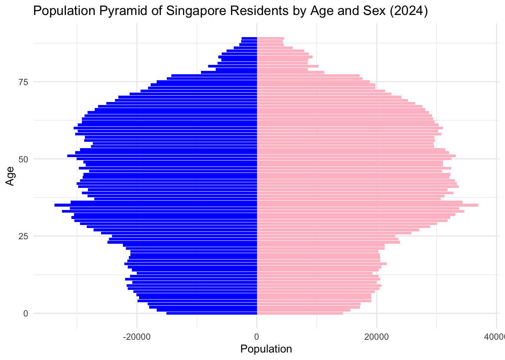
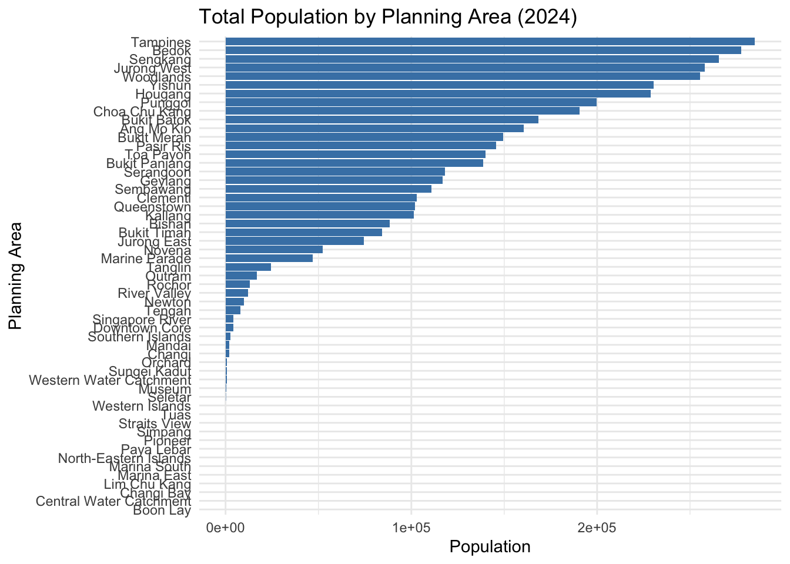
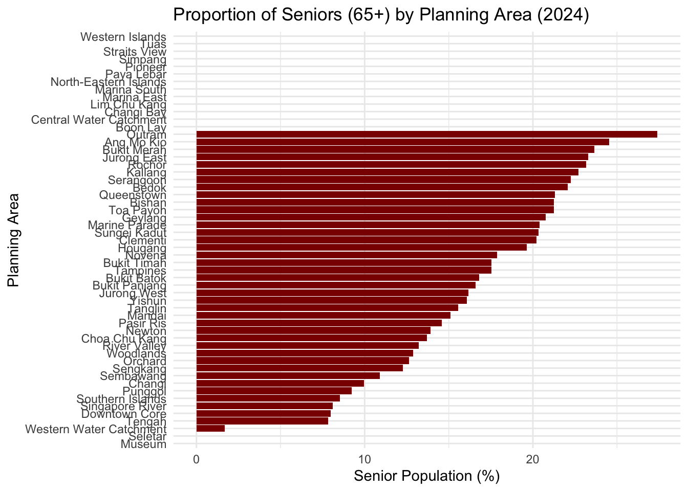
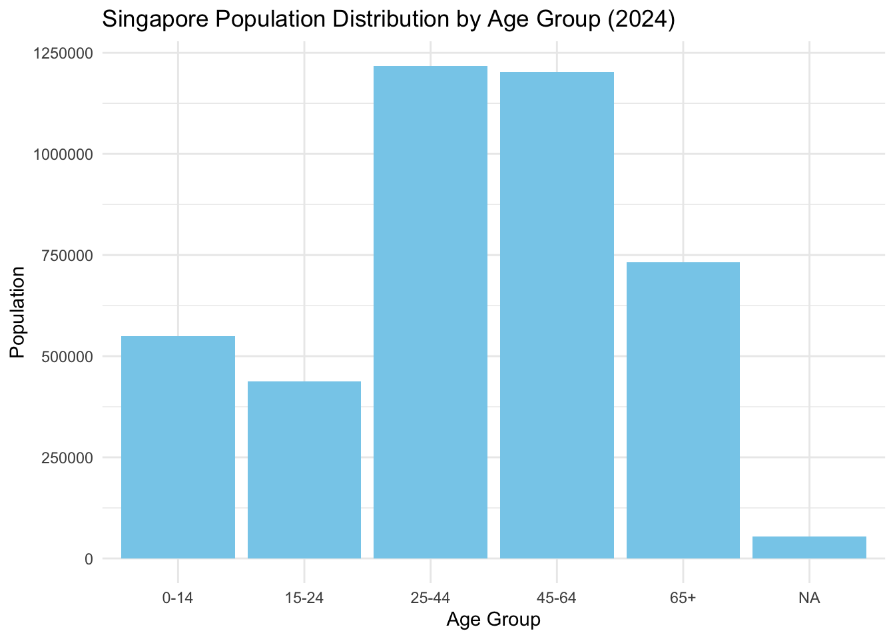
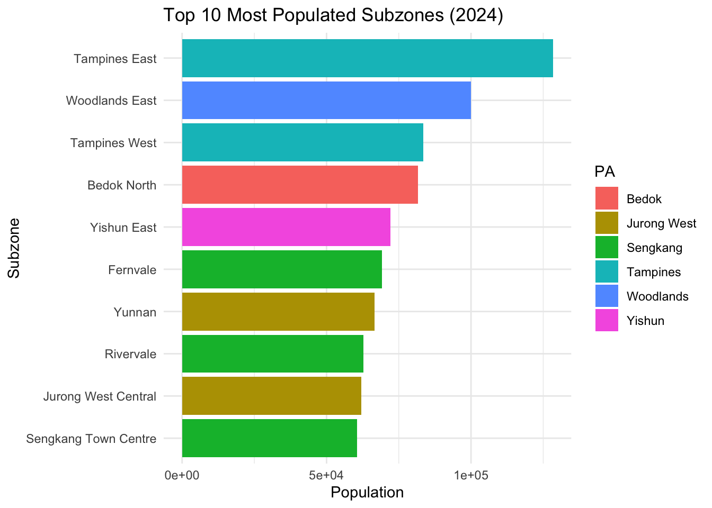
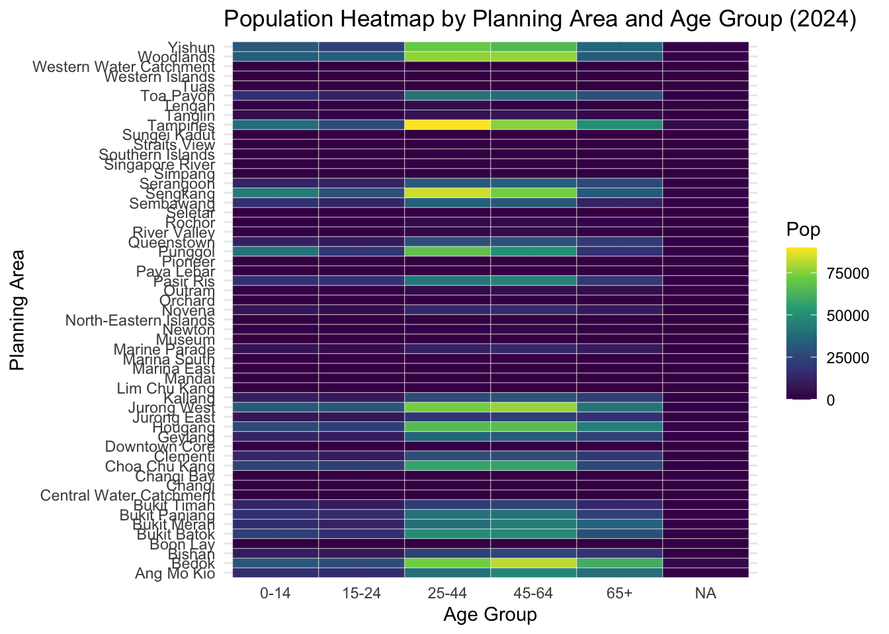

pacman::p_load(tidyverse, ggthemes, patchwork, knitr)Take-home Exercise 1: Exploring Singapore Demographics (2024)
1. Overview
1.1 Background
A local online media company is preparing a feature on Singapore’s demographic structure in 2024. This visualisation project aims to support that article by delivering compelling, accurate, and insightful graphics to inform public understanding. We utilise data from the Singapore Department of Statistics on residents by Planning Area/Subzone, Age, and Sex.
1.2 The Data
The dataset respopagesex2024.csv contains detailed resident counts disaggregated by Planning Area (PA), Subzone (SZ), Age, Sex, and Year (2024). It allows exploration of age structures, gender balances, and spatial distribution patterns critical to urban and social planning.
1.3 Data Dictionary
| Variable | Description |
|---|---|
| PA | Planning Area |
| SZ | Subzone |
| Age | Single Year of Age |
| Sex | Gender |
| Pop | Resident Population |
| Time | Reference Time (June 2024) |
1.4 Description of Supplied Files
This project utilizes three related files:
| File Name | Description |
|---|---|
respopagesex2024.csv |
Main dataset in CSV format. Used directly for all data wrangling and plots. |
respopagesex2024e.xlsx |
Excel version of the same dataset. Useful for visual inspection and referencing. |
Notes_respopagesex2024.csv |
Metadata file that provides descriptions of the column headers. |
Although these files have different formats, they describe the same dataset — the resident population of Singapore by Planning Area, Subzone, single year of age, and sex as of June 2024. The CSV file is used for analysis, while the Excel and notes files support documentation and understanding of the structure and semantics of the dataset.
2. Loading Packages
3. Data Preparation
df <- read_csv("/Users/sharon/OneDrive - Singapore Management University/isss608data/take-home_exercise1/respopagesex2024.csv")Rows: 60424 Columns: 6
── Column specification ────────────────────────────────────────────────────────
Delimiter: ","
chr (4): PA, SZ, Age, Sex
dbl (2): Pop, Time
ℹ Use `spec()` to retrieve the full column specification for this data.
ℹ Specify the column types or set `show_col_types = FALSE` to quiet this message.df <- df %>%
mutate(Age = as.numeric(Age),
AgeGroup = cut(Age, breaks = c(0, 14, 24, 44, 64, 100),
labels = c("0-14", "15-24", "25-44", "45-64", "65+")))Warning: There was 1 warning in `mutate()`.
ℹ In argument: `Age = as.numeric(Age)`.
Caused by warning:
! NAs introduced by coercion4. Visualisations
4.1 Population Pyramid
pyramid_df <- df %>%
group_by(Age, Sex) %>%
summarise(Pop = sum(Pop), .groups = 'drop') %>%
pivot_wider(names_from = Sex, values_from = Pop) %>%
mutate(Males = -Males)
ggplot(pyramid_df, aes(x = Age)) +
geom_bar(aes(y = Males), stat = "identity", fill = "blue") +
geom_bar(aes(y = Females), stat = "identity", fill = "pink") +
labs(title = "Population Pyramid of Singapore Residents by Age and Sex (2024)",
x = "Age", y = "Population") +
theme_minimal() +
coord_flip()Warning: Removed 1 row containing missing values or values outside the scale range
(`geom_bar()`).
Removed 1 row containing missing values or values outside the scale range
(`geom_bar()`).
Interpretation:
Aging trend is evident with a large senior population. Strong working-age base from 25–64. Balanced gender distribution across age groups.
4.2 Total Population by Planning Area
pop_area <- df %>%
group_by(PA) %>%
summarise(Pop = sum(Pop)) %>%
arrange(desc(Pop))
ggplot(pop_area, aes(x = reorder(PA, Pop), y = Pop)) +
geom_col(fill = "steelblue") +
coord_flip() +
labs(title = "Total Population by Planning Area (2024)",
x = "Planning Area", y = "Population") +
theme_minimal()
Interpretation:
Planning areas like Bedok, Tampines, and Jurong West are the most populous. Central areas are less populated but may contain older demographics.
4.3 Senior Population Proportion (65+) by Planning Area
senior_df <- df %>%
group_by(PA, Age) %>%
summarise(Pop = sum(Pop), .groups = 'drop') %>%
mutate(AgeGroup = if_else(Age >= 65, "Senior", "Non-Senior")) %>%
group_by(PA, AgeGroup) %>%
summarise(Pop = sum(Pop), .groups = 'drop') %>%
pivot_wider(names_from = AgeGroup, values_from = Pop, values_fill = 0) %>%
mutate(Senior_Pct = Senior / (Senior + `Non-Senior`) * 100)
ggplot(senior_df, aes(x = reorder(PA, Senior_Pct), y = Senior_Pct)) +
geom_col(fill = "darkred") +
coord_flip() +
labs(title = "Proportion of Seniors (65+) by Planning Area (2024)",
x = "Planning Area", y = "Senior Population (%)") +
theme_minimal()Warning: Removed 13 rows containing missing values or values outside the scale range
(`geom_col()`).
Interpretation:
Central areas like Bukit Merah and Outram have a high proportion of elderly residents, demanding targeted services for aging populations.
4.4 Singapore Population Distribution by Age Group (2024)
age_group_dist <- df %>%
group_by(AgeGroup) %>%
summarise(Pop = sum(Pop))
ggplot(age_group_dist, aes(x = AgeGroup, y = Pop)) +
geom_col(fill = "skyblue") +
labs(title = "Singapore Population Distribution by Age Group (2024)",
x = "Age Group", y = "Population") +
theme_minimal()
Interpretation:
Working-age groups (25–64) dominate, with growing numbers in the 65+ category. Young children and teens are a smaller share.
4.5 Top 10 Most Populated Subzones (2024)
top_subzones <- df %>%
group_by(PA, SZ) %>%
summarise(Pop = sum(Pop), .groups = "drop") %>%
slice_max(Pop, n = 10)
ggplot(top_subzones, aes(x = Pop, y = fct_reorder(SZ, Pop), fill = PA)) +
geom_col() +
labs(title = "Top 10 Most Populated Subzones (2024)",
x = "Population", y = "Subzone") +
theme_minimal()
Interpretation:
Subzones in Jurong West, Tampines, and Woodlands are the most densely populated, likely requiring greater investment in local infrastructure.
4.6 Population Heatmap by Planning Area and Age Group (2024)
heatmap_df <- df %>%
group_by(PA, AgeGroup) %>%
summarise(Pop = sum(Pop), .groups = "drop") %>%
pivot_wider(names_from = AgeGroup, values_from = Pop, values_fill = 0)
heatmap_df %>%
pivot_longer(-PA, names_to = "AgeGroup", values_to = "Pop") %>%
ggplot(aes(x = AgeGroup, y = PA, fill = Pop)) +
geom_tile(color = "white") +
scale_fill_viridis_c() +
labs(title = "Population Heatmap by Planning Area and Age Group (2024)",
x = "Age Group", y = "Planning Area") +
theme_minimal()
Interpretation:
This matrix highlights how different age groups are distributed. Young clusters in Sengkang and Punggol; older residents dominate central areas.
5. Statistical Summary
summary_df <- df %>%
group_by(PA) %>%
summarise(
Median_Age = median(Age, na.rm = TRUE),
Elderly_Pct = sum(Pop[Age >= 65], na.rm = TRUE) / sum(Pop, na.rm = TRUE) * 100
) %>%
left_join(
df %>%
group_by(PA, SZ) %>%
summarise(Pop = sum(Pop), .groups = "drop") %>%
group_by(PA) %>%
summarise(CV = sd(Pop) / mean(Pop), .groups = "drop"),
by = "PA"
)
knitr::kable(summary_df, digits = 2, caption = "Demographic Statistics by Planning Area")| PA | Median_Age | Elderly_Pct | CV |
|---|---|---|---|
| Ang Mo Kio | 44.5 | 24.31 | 0.77 |
| Bedok | 44.5 | 21.89 | 0.68 |
| Bishan | 44.5 | 21.07 | 0.07 |
| Boon Lay | 44.5 | NaN | NaN |
| Bukit Batok | 44.5 | 16.72 | 0.41 |
| Bukit Merah | 44.5 | 23.37 | 0.63 |
| Bukit Panjang | 44.5 | 16.52 | 0.50 |
| Bukit Timah | 44.5 | 17.40 | 0.52 |
| Central Water Catchment | 44.5 | NaN | NA |
| Changi | 44.5 | 9.84 | 1.13 |
| Changi Bay | 44.5 | NaN | NA |
| Choa Chu Kang | 44.5 | 13.66 | 0.23 |
| Clementi | 44.5 | 20.07 | 0.85 |
| Downtown Core | 44.5 | 7.91 | 1.61 |
| Geylang | 44.5 | 20.58 | 0.72 |
| Hougang | 44.5 | 19.51 | 0.78 |
| Jurong East | 44.5 | 23.13 | 1.40 |
| Jurong West | 44.5 | 16.12 | 0.96 |
| Kallang | 44.5 | 22.47 | 0.94 |
| Lim Chu Kang | 44.5 | NaN | NA |
| Mandai | 44.5 | 15.02 | 1.73 |
| Marina East | 44.5 | NaN | NA |
| Marina South | 44.5 | NaN | NA |
| Marine Parade | 44.5 | 20.15 | 1.18 |
| Museum | 44.5 | 0.00 | 1.54 |
| Newton | 44.5 | 13.82 | 1.06 |
| North-Eastern Islands | 44.5 | NaN | NA |
| Novena | 44.5 | 17.70 | 1.26 |
| Orchard | 44.5 | 12.64 | 0.84 |
| Outram | 44.5 | 26.88 | 1.08 |
| Pasir Ris | 44.5 | 14.51 | 1.06 |
| Paya Lebar | 44.5 | NaN | NaN |
| Pioneer | 44.5 | NaN | NaN |
| Punggol | 44.5 | 9.22 | 0.84 |
| Queenstown | 44.5 | 21.05 | 1.07 |
| River Valley | 44.5 | 13.12 | 0.65 |
| Rochor | 44.5 | 22.78 | 0.93 |
| Seletar | 44.5 | 0.00 | 2.00 |
| Sembawang | 44.5 | 10.87 | 1.08 |
| Sengkang | 44.5 | 12.25 | 0.79 |
| Serangoon | 44.5 | 22.05 | 0.69 |
| Simpang | 44.5 | NaN | NaN |
| Singapore River | 44.5 | 8.10 | 1.73 |
| Southern Islands | 44.5 | 8.53 | 1.41 |
| Straits View | 44.5 | NaN | NA |
| Sungei Kadut | 44.5 | 20.00 | 2.24 |
| Tampines | 44.5 | 17.44 | 0.87 |
| Tanglin | 44.5 | 15.44 | 0.65 |
| Tengah | 44.5 | 7.81 | 2.39 |
| Toa Payoh | 44.5 | 21.02 | 0.54 |
| Tuas | 44.5 | NaN | NaN |
| Western Islands | 44.5 | NaN | NaN |
| Western Water Catchment | 44.5 | 1.69 | 1.73 |
| Woodlands | 44.5 | 12.84 | 1.12 |
| Yishun | 44.5 | 16.01 | 0.97 |
Interpretation:
This table shows: - Median Age: Areas like Bedok and Ang Mo Kio have older populations. - Elderly %: Downtown and Bukit Merah have over 20% elderly. - CV (Spread): Population in some PAs is unevenly distributed across subzones, indicating potential resource imbalances.
Key Observations:
Eastern and Northern population hotspots:
Planning areas like Tampines, Bedok, and Sengkang show the highest residential concentrations.Lower density in central/southern regions:
Marina South, Central Water Catchment, and Downtown Core show low population due to commercial zoning or conservation land use.Suburban growth in the West and North-West:
Areas like Jurong West and Woodlands reflect continued public housing expansion and decentralised urban planning.Strategic implications:
Infrastructure, healthcare, and education planning should prioritise high-density residential zones. Meanwhile, low-population regions align with Singapore’s mixed-use and green space strategies.Uneven population distribution:
The map highlights strong clustering of residential population, aligned with intentional zoning and national development policy.
6. References
- Department of Statistics Singapore, 2024 dataset
- Kam, T.S. (2023). R for Visual Analytics
- Wong, K. (2020). Visual Analytics Course Notes